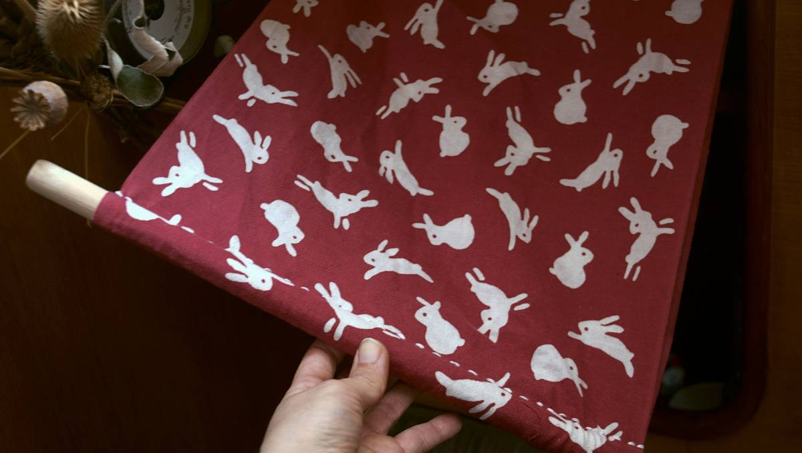
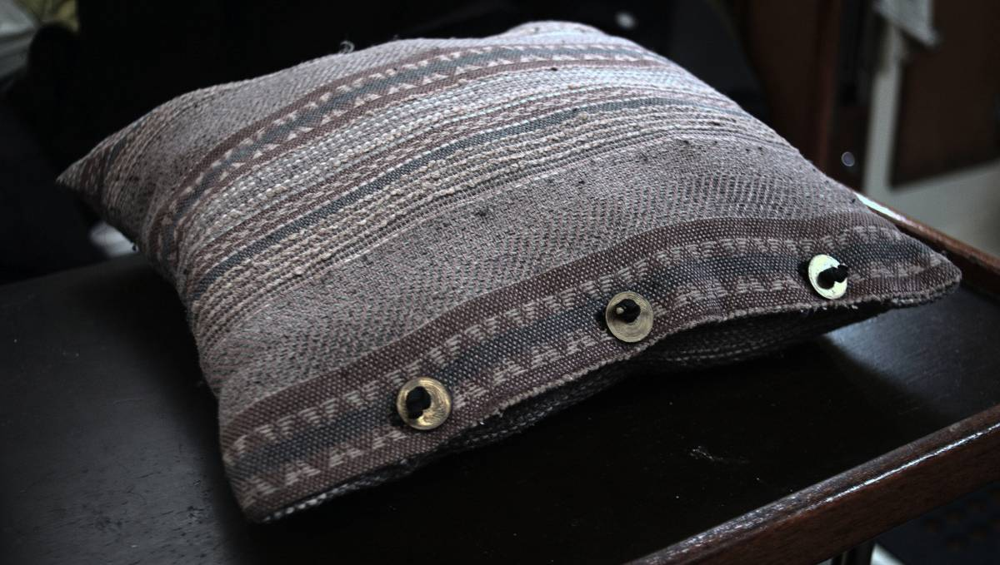

I like to repurpose and repair. This is a page that documents some of my little projects aboard pino.
Sewing is done by hand, sometimes using a speedy stitcher(sewing awl)
Tea Cosy
April 23rd 2023

A friend gave us his old oven mitts when he moved out of his boat last year(spring 2022). I cut them up, combined, and re-stitched them into a sort of tea cosy for my percolator(which I use as a kettle).
When I need hot water refills for tea I can keep water warm for a while this way.

The two mitts became one. I stitched on an old elastic band I had around the thumb/spout opening and the bottom of the tea cosy to hide the seams.
Curtain
March 21st 2021

Made a little curtain for an area where we keep spices and drinks. Shields them from light, and will keep them from falling out of that space.
The curtain has two pockets sown in, with a wooden dowel on each end.
The rabbit fabric was a gift from a friend in Japan. Been carrying it around a while, but only just found a use for it!
Cushions
March 14th 2021
The cushions we had aboard Pino were old, and flat. I cut them open today, and removed the inside and instead stuffed them with some extra clean towels, rags and winter socks. We don't have a ton of storage space, so this helps :D. Now the cushions are nice and plump.

Did not have extra zippers or buttons on hand to close the cushions up again, so I used some Japanese coins from our last trip (the 5 yen with the hole in the middle) as buttons with some bits of old paracord.